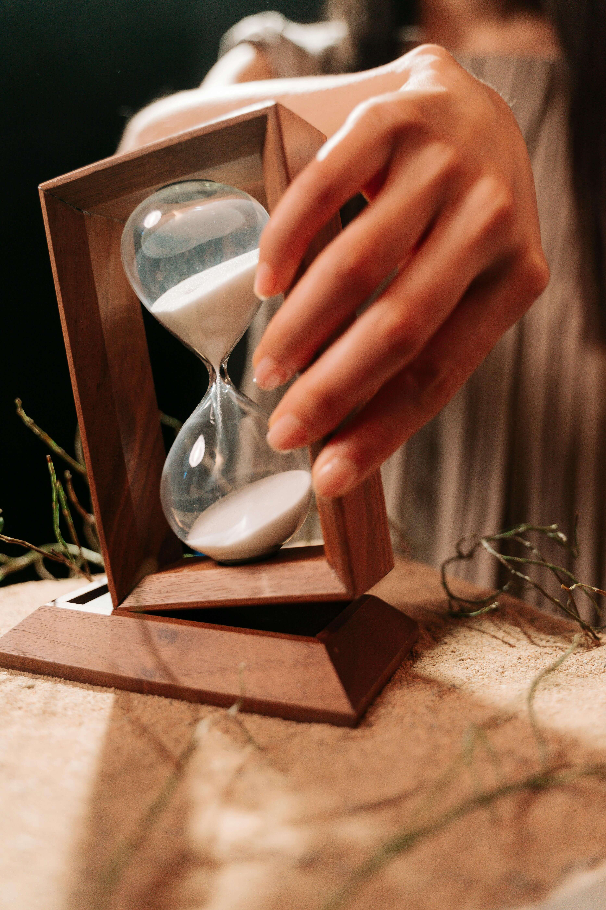
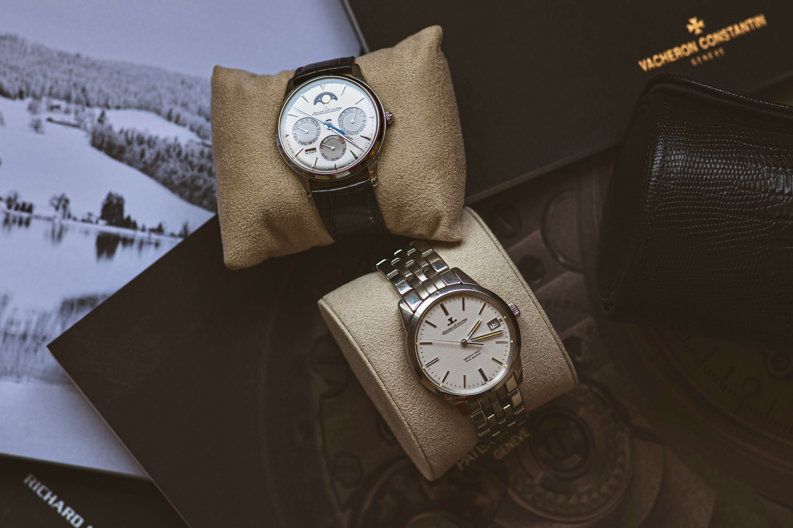
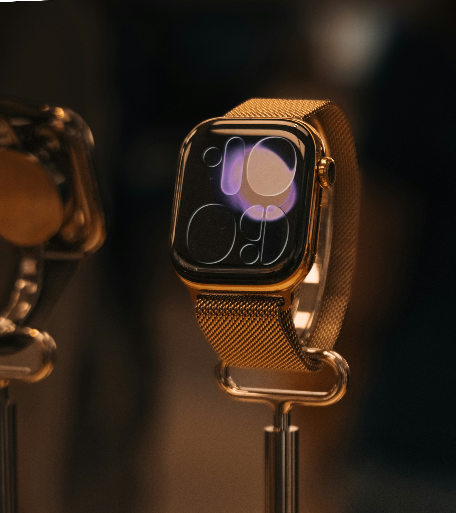
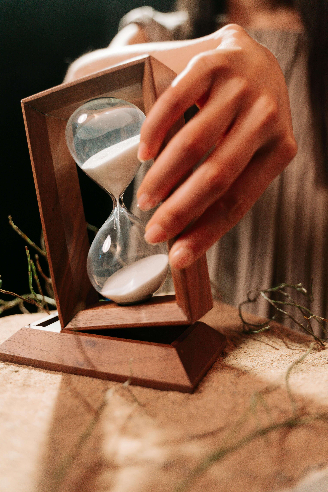
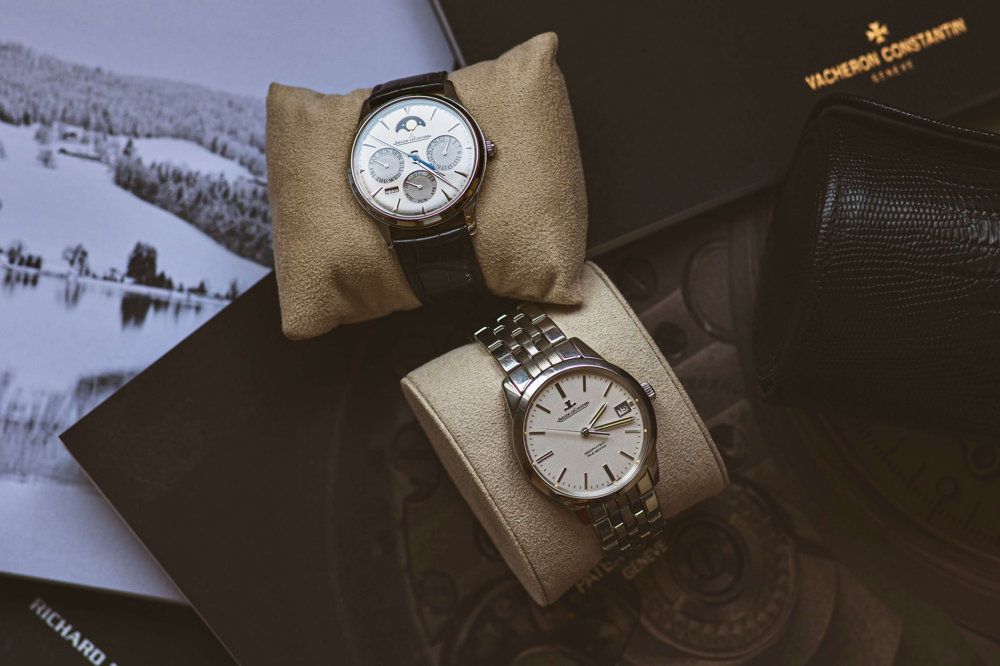
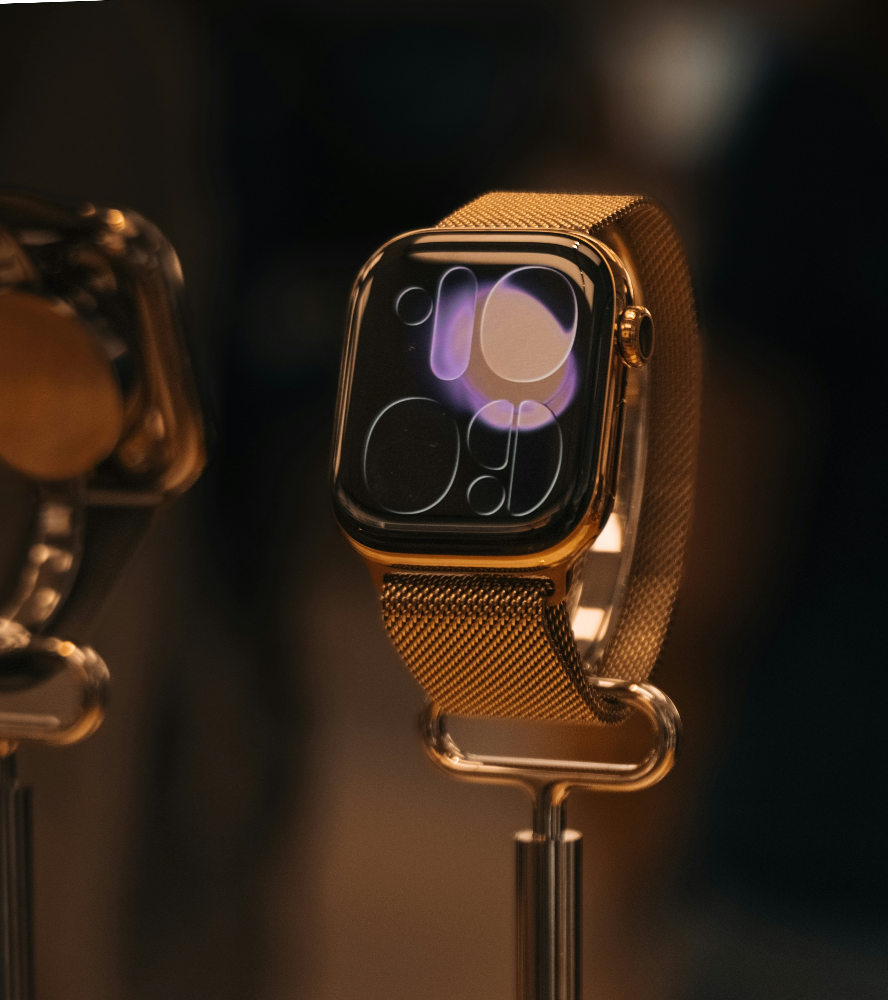

Our Story
ERA was founded with a simple belief: time deserves respect. In a world that moves fast, we create watches that slow things down — pieces that feel meaningful, reliable, and enduring. ERA blends contemporary design with traditional watchmaking values, resulting in timepieces that remain relevant across generations.
Our Philosophy
We do not chase trends — we craft timeless design. Our watches are built with precision movements, refined materials, and balanced aesthetics that never fade. ERA is not just a watch. It is a statement of time well spent.
The ERA Journal
The ERA Journal is where craftsmanship meets storytelling. Discover behind-the-scenes design insights, style inspiration, watch care guidance, and collection launches. Every timepiece has a story. This is ours.
Gallery
Explore the visual world of ERA — a curated collection of craftsmanship, elegance, and timeless detail.


 




